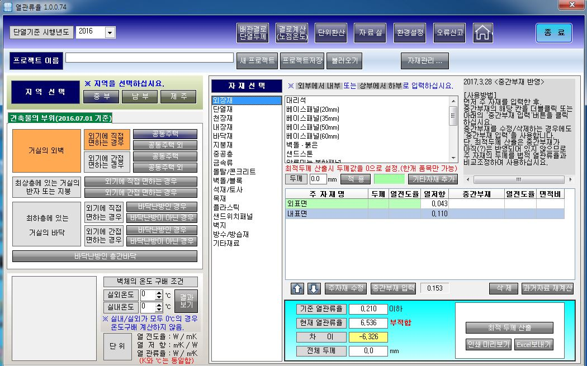
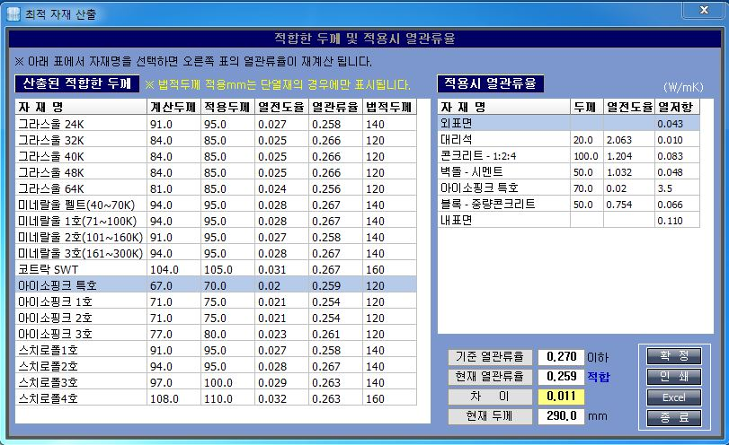
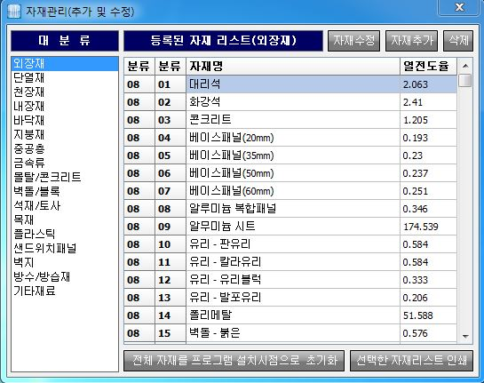
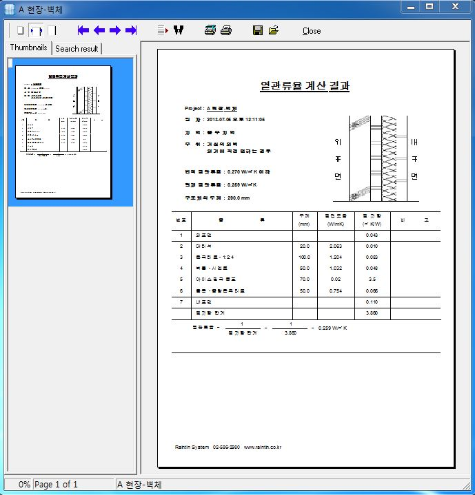
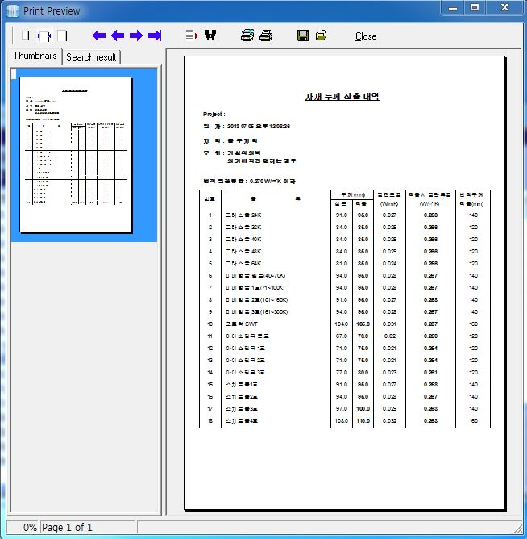
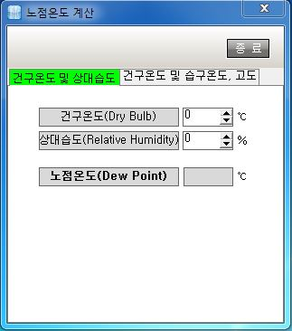
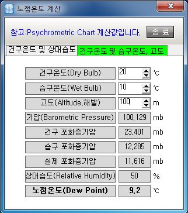
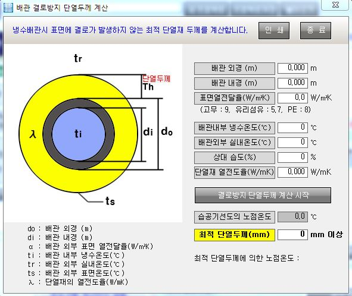

<열관류율 프로그램 화면>

- 단열기준 적용년도 : 2011/2013/2016년을 선택합니다. 참고로 2016년은 7월 1일부터 시행합니다.
- 프로젝트 이름은 파일저장 및 인쇄시 필요하므로 식별할 수 있는 명칭으로 입력하여 주십시요. 이 명칭이 파일 이름이므로 중복되지 않도록 입력하십시요.
- 왼쪽에 있는 버튼에서 시행기준에 따라 지역 및 건축물 부위를 클릭하여 선택합니다.(선택되면 색상이 변합니다.)
- 오른쪽 박스에서 자재 분류를 선택하면 자재리스트가 나열되므로 해당자재를 클릭하십시요. 그 아래에 두께를 입력하고 "적용"버튼을 클릭하면 구조체 리스트에 삽입됩니다.
- 자재리스트에 없는 자재의 경우 "기타자재 추가"버튼으로 타 자재를 구조체에 추가할 수 있습니다. "기타자재 추가"의 경우에는 사용자 자재에 정식으로 등록된 것은 아니며 현재의 구조체에만 적용됩니다. 계속 사용될 자재의 경우 "자재관리..."버튼을 클릭하여 정상 등록하면 향후 계속 사용하실 수 있습니다.
- 자재가 구조체에 반영됨과 동시에 열저항 및 현재의 열관류율이 계산되어 하단에 나타나며 적합 또는 부적합을 표시합니다.
- 최적의 단열재를 선택하고자 하려면 두 가지 방법이 있습니다. (1) 자재종류는 확정하였으나 최적의 두께만 산출하는 경우 위 예에서 아이소핑크 특호를 "수정"을 클릭하여 두께를 0 으로 설정하고 "최적 두께 산출"버튼을 클릭하면 시행기준에 적합한 아이소핑크 특호의 두께가 계산되어 별도 창으로 나타납니다. (아래 3. 참조) (2) 단열재 전체 자재에 대하여 자재종류 및 두께를 보고자 하는 경우 위 예에서 아이소핑크 특호를 "수정"을 클릭하여 자재명을 "전체"로 바꾸어 "적용"을 클릭하고 "최적 두께 산출"을 누르면 모든 단열재의 자재명 및 해당두께, 적용시 열관류율이 계산되어 별도 창으로 나타나고 원하는 자재를 클릭하면 구조체 표가 재계산됩니다. 해당단열재를 수정하지 않고 처음부터 단열재 전체를 선택해도 무방합니다.
최적 두께 산출

- 위에서 설명한 최적 두께 산출시 나타나는 별도 창입니다.
- 1) 원하는 자재를 클릭하면 오른쪽 구조체 표의 열관류율이 재 계산되며 "확정"버튼을 클릭하면 메인 화면의 구조체 표도 갱신됩니다.
- 2) 인쇄를 누르면 미리보기 후 인쇄할 수 있으며 Excel로 전환하여 추가 데이타가공을 할 수 있습니다.
자체 관리 화면

- 1) 메인화면의 "자재관리 ..."버튼 클릭시 나타나는 화면입니다
- 2) 자재이름 또는 열전도율 조정이 필요한 경우 상단의 "자재수정", "자재추가", "삭제" 버튼을 이용하여 사용자 자재를 구성할 수 있습니다.
- 3) 단, 중공층과 같은 정형화된 자료는 변경할 수 없습니다.
- 4) 하단에 "전체 자재를 프로그램 설치시점으로 초기화" 버튼이 있습니다. 이 기능은 사용자자재 또는 기존자재의 데이타가 수정되어 원본 자재 및 열전도율이 불확실한 경우 사용할 수 있습니다. 휴대폰의 공장초기화와 같은 개념으로 사용자가 수정/추가한 자재는 모두 삭제되고 최초의 설치상태 기본 데이타만 남습니다. 프로젝트 저장파일은 PC에 유지되므로 지워지지 않습니다.
구조체 인쇄

- 1) 구조체 작업이 완료된 후 "인쇄"를 누르면 위와 같이 미리보기가 나타나고 인쇄할 수 있습니다.
"최적 두께 산출" 인쇄 화면

- 1) "최적 두께 산출"시 인쇄를 누르면 위와 같이 인쇄할 수 있습니다.
노점온도(결로) 계산


- ** 위 두가지 산출 데이타는 Psychrometric Chart 계산방법을 적용합니다.
- ** 건구온도와 상대습도로 노점온도 산출
배관결로 단열두께 계산

- ** 위 항목중 "표면 열전달율(W/㎡K)"은 파이프 단열재 표면의 열전달율입니다.(파이프 재질의 값이 아님)